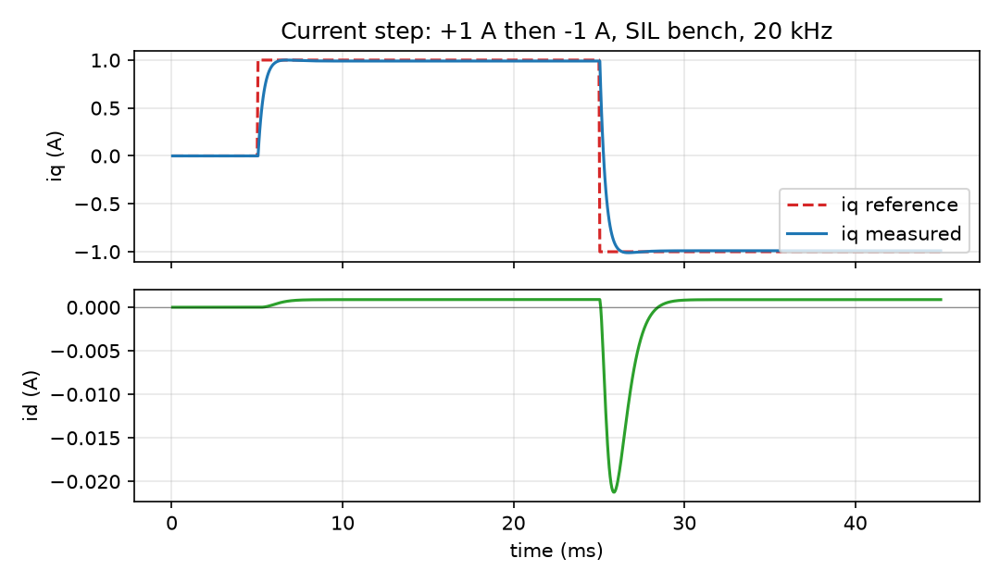
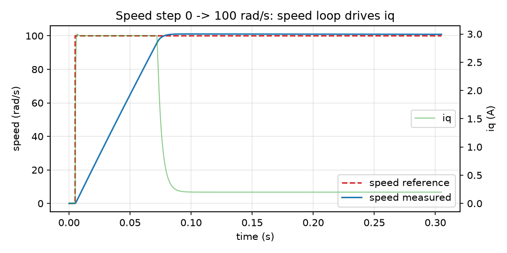
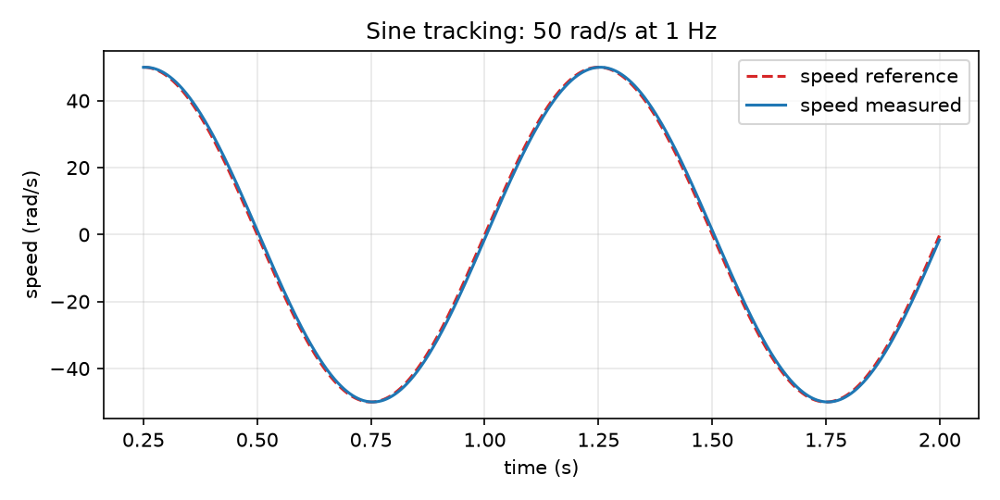
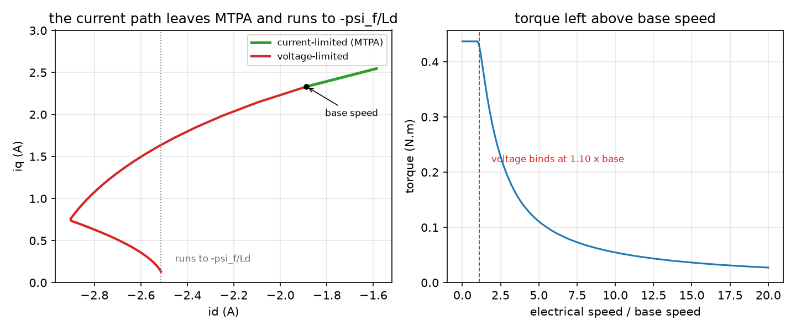
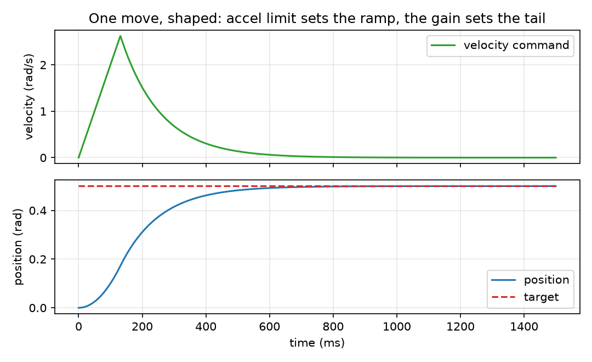
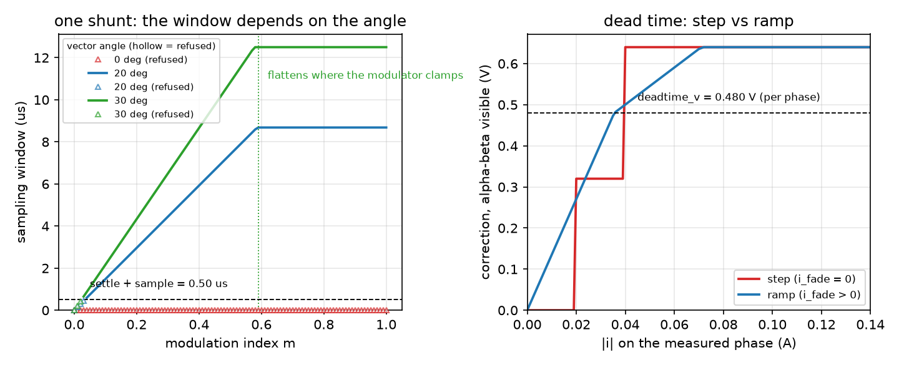
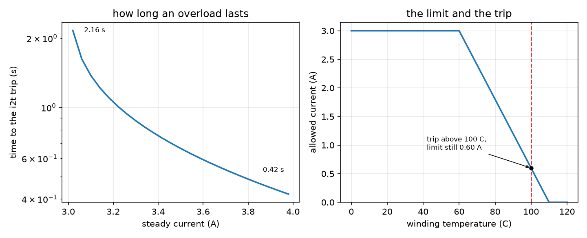

3. Measured responses
Every figure below is produced by running this library — no mock-up, no hand-drawn curve. The pipeline is:
docs/demos/sil_export.cppdrives the SIL bench through one scenario and writes a trace and a metrics CSV;docs/demos/make_figures.pycompiles it against the repository sources, runs it, and plots the result;python docs/build.pycopies the figures into the site.
source ~/venv/build/bin/activate # matplotlib + numpy
python3 docs/demos/make_figures.py # regenerate figures and tables
To compile one example by hand instead: every example links against the whole of src/
minus version, which the Conan recipe wraps in extern "C" and the raw headers do not.
g++ -std=c++17 -O2 -Iinclude -Itest_package/test/unit \
docs/doxygen/dox/demos/torque-reference.cxx \
$(find src -name '*.cpp' -o -name '*.c' | grep -v '/version\.') \
-o /tmp/torque-reference
Swap the stem for the example you want; each task page below links to the one it uses.
The scenarios mirror the SIL acceptance suite, so what you see here is the same closed loop the test suite asserts on.
This page is the picture index of the site: one figure per task, in the order a machine
meets them. Each figure is followed by what to look for and by the page that explains how to
produce it. The numbers stay where they are measured — the three SIL scenarios keep their own
metrics tables below, everything else points at the claim table in the project README.md
rather than copying a value into prose.
3.1. Closed loop on the SIL plant
Three scenarios that need a closed loop: a current step, a speed step, and a sine. The C API — and therefore the Python module — runs on the stub HAL, whose current feedback is a fixed script, so these three come from the C++ path with the SIL plant.


Figure 3.1 q-axis reference jumps 0 → +1 A → −1 A at standstill; iq follows it twice, the second time in the opposite direction
metric |
value |
unit |
|---|---|---|
settling_time_5pct |
0.0009 |
s |
overshoot |
0.00 |
% |
steady_state_error |
0.0101 |
A |
What to look for: no overshoot, no integrator wind-up at the reversal (the second step settles as cleanly as the first), and a d-axis disturbance two orders of magnitude below the q-axis setpoint. Explained in Torque below base speed.


Figure 3.2 speed reference steps to 100 rad/s while the current loop stays at 20 kHz: iq saturates during the ramp and collapses to the friction-compensating value once the speed settles
metric |
value |
unit |
|---|---|---|
settling_time_2pct |
0.0690 |
s |
overshoot |
1.08 |
% |
steady_state_error |
-0.9067 |
rad/s |
What to look for: iq hits its limit during the ramp — the loop is doing the right thing, not fighting itself — a small overshoot, and a steady-state error inside one percent. The outer loop this trace runs is the one tuned by Outer-loop self-tuning.


Figure 3.3 measured speed against a 1 Hz sine reference, first 0.25 s of transient trimmed off
metric |
value |
unit |
|---|---|---|
worst_error_pct_of_amplitude |
2.54 |
% |
peak_to_peak_speed |
99.98 |
rad/s |
What to look for: the peak-to-peak swing stays at the reference amplitude (no collapse) and the worst error stays a few percent. A step test cannot see phase lag and amplitude collapse; a sine can. Explained in Outer-loop self-tuning.
3.2. One response per task
The same figure step, applied to each task page's own example — no plant, no closed loop, just the quantity that task is about:

Figure 3.4 the forced angle, unwrapped, and the current the start-up recipe asks for: a flat hold, then the pull
Bringing a sensorless machine up — what the curve cannot show is whether the rotor followed.

Figure 3.5 left: angle error against time for three saliency ratios, on a log axis because the decay is over inside the first division; right: the library's own sensitivity function, zero at a saliency ratio of one
Zero and low speed — the right panel is the reason a surface-mount machine gets no benefit from injection.


Figure 3.6 left: the current path from the MTPA point at the current ceiling, past the base-speed marker, along the voltage ellipse towards the characteristic current; right: the torque that is left as the speed rises
Above base speed — read the left panel together with High speed and modulation: the ellipse is where modulation ends.

Figure 3.7 the same amplitude sweep at 0 and at 30 electrical degrees: both grow linearly with the request, and they clamp at two different amplitudes
High speed and modulation — the gap between the two clamp points is the overmodulation region, and it is where six-step lives.


Figure 3.8 one move shaped by an acceleration limit: the velocity command ramps up at the ceiling, then decays as the error shrinks, and the position converges without overshoot
Positioning an axis — the profile is the reference, so the tail of the curve is the plant's, not the loop's.


Figure 3.9 left: the sampling window one shunt leaves, against the modulation index, at three vector angles — hollow markers are the samples the library refused; right: the dead-time correction the library commands, read in the alpha-beta frame, for a step and a ramp
Sampling and the power stage — the refusals matter more than the window: a refused sample is the library saying it does not know the current.


Figure 3.10 left: how long an overload lasts below the hard trip — a duration that runs away as the current approaches the rating; right: the continuous limit against temperature, with the trip threshold drawn on top of it
Health and protection — the trip line is read from its own constant, so the two panels cannot disagree.

Figure 3.11 a torque command through the C ABI: the measured current follows the command, and the duty span written back through the callback moves at each step
Consuming the library from outside C++ — the same experiment runs through the C++ door, and the page reports the difference between the two doors rather than the curve.
3.3. Where the numbers live
No figure on this page states a measured value in its caption. A value that matters is either a
row of one of the three metrics tables above (written by the same run that drew the curve) or a
claim row in the project README.md, whose evidence is a test case. Usage and verification collects
those claim rows per face; What each capability offers, and what it costs says what each one owes.